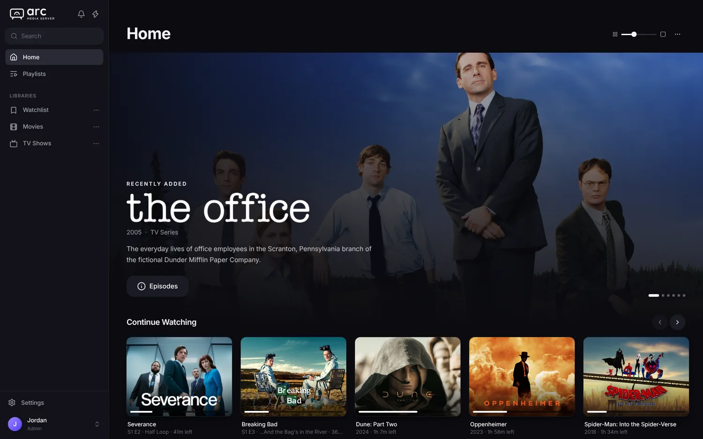

Your library.
On your TV.
Arc organises the films, shows and home videos you already own. Run it on your own server and settle in with the Arc app.
Free and open source In alpha


Set it up in your browser.
Point Arc at your media folders. It finds titles, brings in artwork and gets them ready to browse while the scan runs. Your files stay where they are.
- Pick up where you left off on another screen.
- Give each person their own profile and watch history.
- Share just the libraries you choose.
Watch in the order you choose.
Keep the numbering on disk and choose how a show appears in Arc. Switch between available aired, DVD and alternate orders, or arrange episodes yourself.
Compare orders before switching. Arc keeps your files and watch history in place.

Easy to set up.
Good to watch on TV.
I started Arc because I wanted a self-hosted media server I could set up, hand someone the remote, and trust them to find something to watch. That’s still what I’m building towards.
The everyday things should work with sensible defaults. Add your films and shows, open Arc on the TV, and pick up where you left off. The features you use every day should be built in, without a list of plugins to put together first.
There’s room to go deeper when you need to. Choose how a show’s episodes are ordered, fix a bad match, or use PostgreSQL on a new install. Your media files stay where they are.
Start with
your server.
Run Arc on a computer or NAS that can access your media. Open the web app to add a library, then connect a player on your TV.
Docker quickstartLinux Docker image for x86-64 and Arm64. The web player comes with the server.
Choose your player
Explore Arc on Apple TV, Android TV and Google TV, LG and Samsung TVs, Roku, and Kodi. See screenshots and check the installation steps for your device.
See all apps